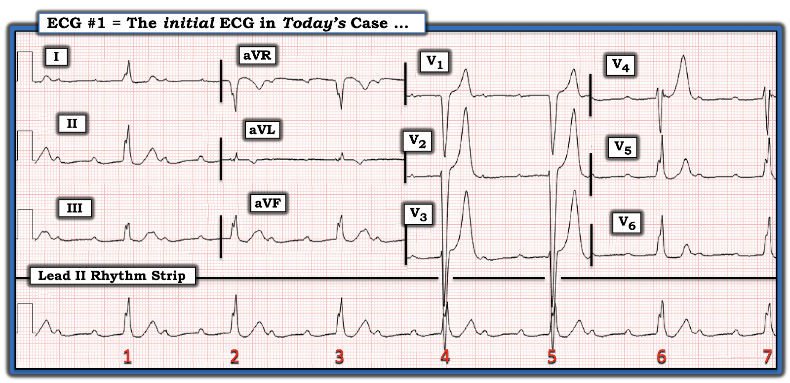
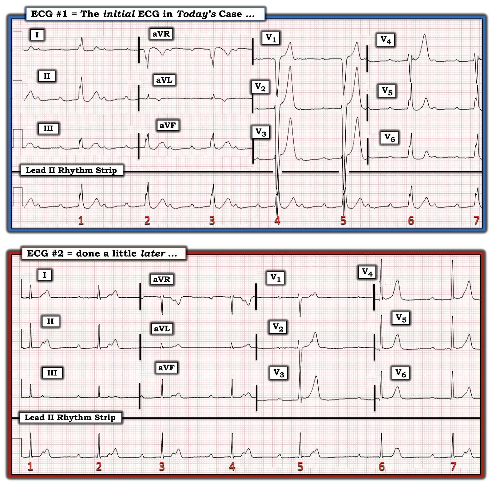
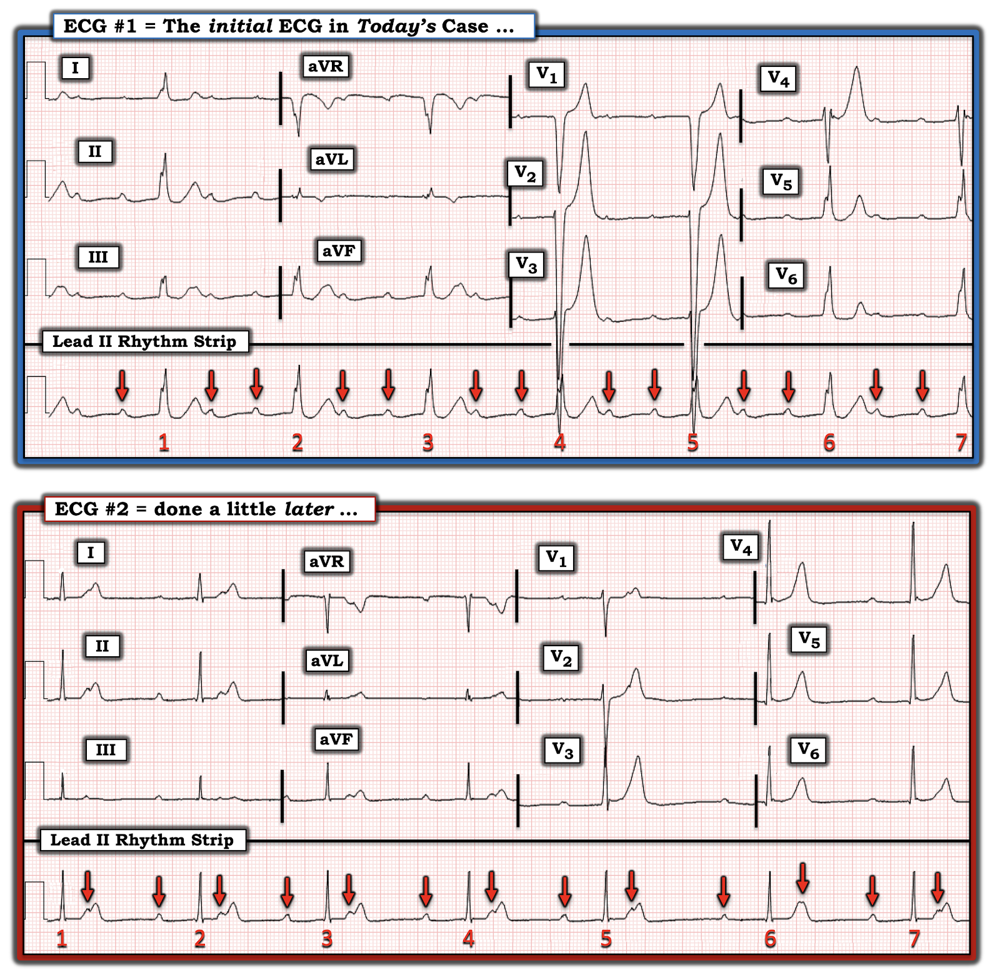
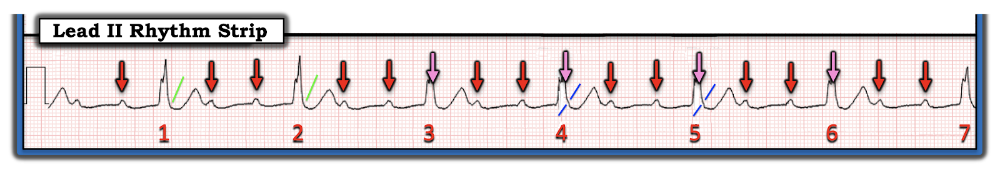
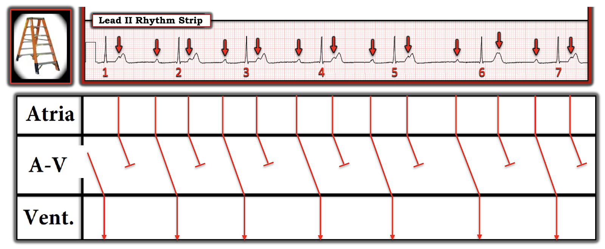
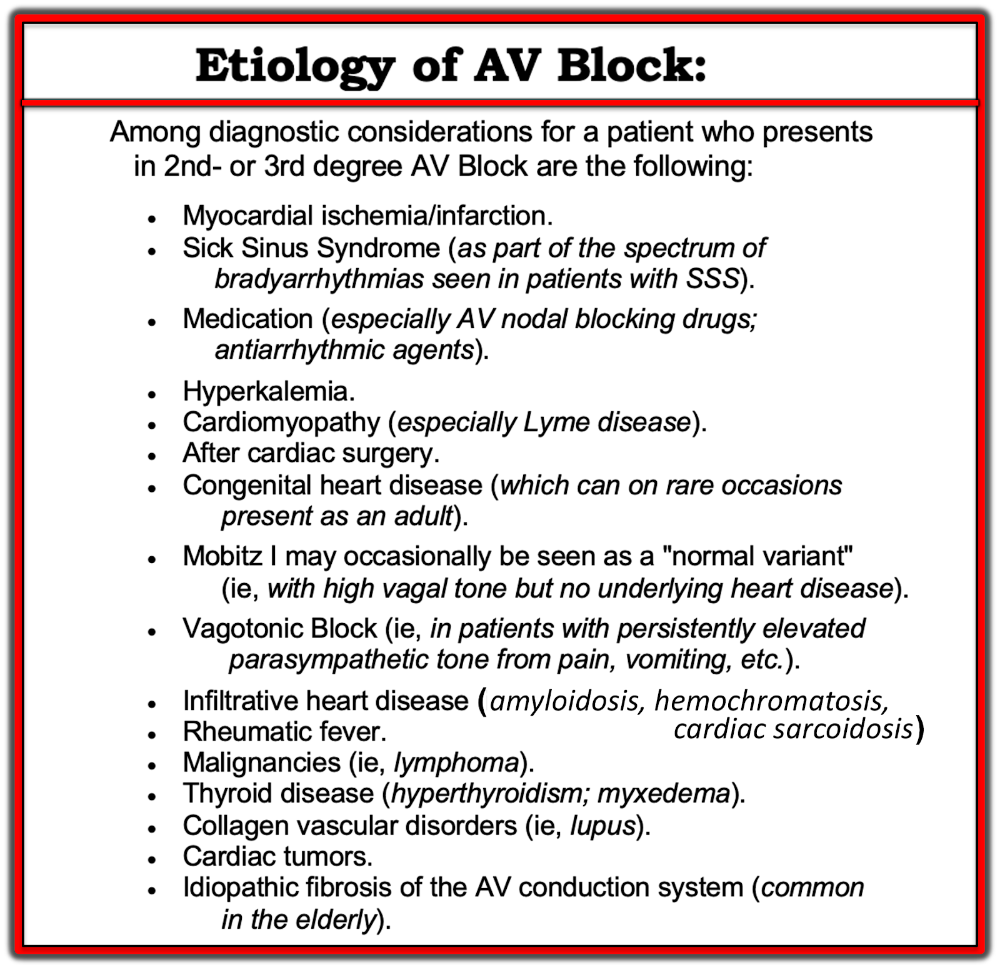

ECG Blog #358 — Một thanh niên 20 tuổi bị nhịp chậm
Điện tâm đồ ở Hình-1 — được ghi từ một nam thanh niên 20 tuổi trước đây khỏe mạnh, đến khám vì khó chịu ở ngực khi hít vào — nhưng không có tiền sử ngất/tiền ngất và không có dấu hiệu suy tim.
- Trước đó chưa từng ghi điện tâm đồ.
- Ngoài mạch chậm — dấu hiệu sinh tồn, độ bão hòa oxy và khám thực thể đều bình thường.
- Xét nghiệm sàng lọc gồm công thức máu toàn bộ, xét nghiệm chức năng tuyến giáp và điện giải đồ huyết thanh đều không có gì đáng chú ý.
CÂU HỎI:
- BẠN sẽ diễn giải điện tâm đồ ở Hình-1 như thế nào?
- Chẩn đoán của bạn là gì?
- Bệnh nhân này có cần máy tạo nhịp không?


Suy nghĩ ban đầu của TÔI về ca hôm nay:
Tôi thấy ca hôm nay hấp dẫn vì 2 lý do: i) Chẩn đoán điện tâm đồ; và, ii) Ý nghĩa lâm sàng của các điện tâm đồ trong ca hôm nay, xét đến việc chúng được ghi từ một nam thanh niên 20 tuổi trước đây khỏe mạnh.
Điện tâm đồ ban đầu ở Hình-1:
Như thường lệ — tôi thích bắt đầu với dải nhịp chuyển đạo II dài — và đánh giá có hệ thống Ps, Qs & 3Rs (Xem ECG Blog #185):
- Nhịp thất trên dải nhịp chuyển đạo II dài ở Hình-1 — chậm và đều tương đối, với tần số khoảng 45/phút (giữa 40 và 50/phút).
- QRS rộng — với hình dạng QRS phù hợp với LBBB (tức là QRS dương hoàn toàn ở các chuyển đạo bên I và V6 — và QRS âm là chủ yếu ở các chuyển đạo trước).
- Sóng P có hiện diện! Khoảng PR trước mỗi nhát trong 7 nhát của bản ghi này kéo dài nhưng hằng định (tức là ở mức ~0.44 giây). Việc thấy khoảng PR hằng định trước mỗi nhát cho chúng ta biết là có dẫn truyền.
- Thấy hai sóng P trong mỗi khoảng R-R. Xét khoảng P-P mà ta thấy giữa 2 sóng P này — điều này gợi ý rằng có thể có một sóng P thứ 3 ẩn trong mỗi phức bộ QRS. Nếu vậy — điều này gợi ý một tần số nhĩ đều và nhanh khoảng ~3 X 40-45/phút, tức tần số nhĩ ~130/phút.
Xem xét phần còn lại của điện tâm đồ 12 chuyển đạo:
Như đã nêu ở trên — mặc dù QRS rộng, mọi nhát ở Hình-1 dường như đều được dẫn truyền. Hình dạng QRS hoàn toàn phù hợp với dẫn truyền kiểu LBBB.
- Biên độ QRS có vẻ tăng đáng kể (tức là các sóng S rất lớn ở các chuyển đạo trước V2,V3 chồng lấn lên nhau rõ rệt). Ở người lớn tuổi hơn — điều này gợi ý LVH kèm theo LBBB. Tuy nhiên, độ đặc hiệu của dấu hiệu sóng S sâu ở các chuyển đạo trước khi có LBBB thấp hơn nhiều ở người trẻ (tức là bệnh nhân hôm nay chỉ mới 20 tuổi).
- Sóng T nhọn ở nhiều chuyển đạo. Các sóng T này rất lớn (tức là cao hơn 20 mm ở các chuyển đạo V2,V3). Mặc dù hình ảnh này có vẻ gợi ý tăng kali máu — nam thanh niên 20 tuổi này trước đây khỏe mạnh, và chúng ta được biết điện giải đồ huyết thanh bình thường!
NHỊP: Tổng Hợp Tất Cả
Điện tâm đồ ban đầu trong ca hôm nay cực kỳ bất thường đối với một nam thanh niên 20 tuổi "trước đây khỏe mạnh"!
- Có blốc AV độ 2 — nhiều khả năng nhất với dẫn truyền AV 3:1. Tần số thất do đó chậm rõ rệt (tức là khoảng 45/phút (giữa 40 và 50/phút)).
- Các sóng P được dẫn truyền thì dẫn với khoảng PR kéo dài rõ rệt.
- QRS rộng — với hình dạng phù hợp với dẫn truyền kiểu LBBB.
- ĐIỀU CỐT LÕI: Chỉ dựa trên một điện tâm đồ ban đầu này — cần cân nhắc chẩn đoán blốc AV độ 2 Mobitz II cho điện tâm đồ #1 (Xem ECG Blog #236 — để ôn lại các loại blốc AV độ 2).
DIỄN TIẾN CA BỆNH:
Một loạt thăm dò chi tiết đã được tiến hành nhằm tìm hiểu vì sao nam thanh niên 20 tuổi trước đây khỏe mạnh này nay lần đầu tiên đến khám với điện tâm đồ như ở Hình-1:
- Troponin huyết thanh — âm tính.
- Siêu âm tim — về cơ bản bình thường (kích thước các buồng tim bình thường, phân suất tống máu ~55-60%).
- CT mạch vành — điểm vôi hóa bằng 0, không gợi ý bất thường động mạch vành.
- MRI tim — không có xơ hóa, sẹo hay phù nề.
- Nghiệm pháp gắng sức tim — cho thấy suy giảm đáp ứng tần số tim (chronotropic incompetence)!
- Sàng lọc tự miễn — âm tính.
- Xét nghiệm bệnh Lyme — âm tính.
- Sàng lọc gen Lamin A/C (LMNA) tìm các đột biến liên quan với bệnh cơ tim giãn có tính gia đình — âm tính.
========================================
Điện tâm đồ theo dõi:
Bản ghi được thực hiện sau điện tâm đồ #1 — được trình bày dưới đây ở Hình-2. Để tiện so sánh — tôi đã đặt cả hai bản ghi này cạnh nhau.
CÂU HỎI:
- Khác biệt giữa 2 bản ghi này là gì?
- Có còn cần máy tạo nhịp không?


So sánh điện tâm đồ #1 và điện tâm đồ #2:
Có một số khác biệt giữa 2 bản ghi này:
- Phức bộ QRS đã hẹp lại ở điện tâm đồ #2 (tức là không còn dẫn truyền kiểu LBBB!).
- Nhịp thất không còn đều ở điện tâm đồ #2. Nhịp thất nhìn chung vẫn chậm (có chỗ nhanh hơn nhịp thất ở điện tâm đồ #1 — nhưng có chỗ lại chậm hơn điện tâm đồ #1).
- Tần số nhĩ đã chậm lại so với điện tâm đồ #1.
- Tỷ lệ dẫn truyền AV đã cải thiện (tức là có vẻ hiện nay là dẫn truyền AV 2:1 — so với tỷ lệ dẫn truyền AV 3:1 thấy ở điện tâm đồ #1).
- ĐIỂM nâng cao: Khoảng PR ở điện tâm đồ #2 vẫn hằng định và kéo dài (tức là ~0.44 giây) trước phức bộ QRS của các nhát #1 đến 5 và trước nhát #7. Dù vậy — đo cẩn thận gợi ý rằng khoảng PR trước nhát #6 đã dài hơn một chút (tức là ~0.48 giây) so với các khoảng PR khác trong bản ghi này!
Xem kỹ hơn hoạt động nhĩ:
Sẽ dễ nhận ra hơn điều gì đang xảy ra với hoạt động nhĩ trong các bản ghi hôm nay — NẾU chúng ta thêm mũi tên ĐỎ lên những sóng P mà ta thấy rõ (Hình-3).
- Không chỉ tần số nhĩ đã chậm lại ở điện tâm đồ #2 — mà việc thêm mũi tên ĐỎ ở Hình-3 còn giúp dễ nhận ra hơn nhiều rằng khoảng P-P nay thay đổi trên bản ghi theo dõi này.
ĐIỂM THEN CHỐT (PEARL) #1: Như thấy rõ ở nhiều ví dụ về blốc AV đã xuất hiện trong ECG Blog này — rất thường gặp loạn nhịp xoang “theo pha thất" (ventriculophasic) đi kèm với blốc AV độ 2 hoặc độ 3.
- Phần lớn thời gian (như trường hợp ở Hình-3) — khoảng P-P ngắn hơn là khoảng “kẹp” một phức bộ QRS (giả thuyết là tưới máu tim được cải thiện sau khi thất co bóp — làm khoảng P-P có chứa QRS ngắn lại một chút).


Hoạt động nhĩ ở điện tâm đồ #1:
Để cho rõ ở Hình-4 — tôi đã tách dải nhịp chuyển đạo II dài của điện tâm đồ #1 khỏi phần còn lại của điện tâm đồ 12 chuyển đạo nằm phía trên nó ở Hình-3.
- Làm vậy giúp làm nổi bật rằng hợp lý hơn nhiều khi cho rằng nhịp nhĩ nền ở điện tâm đồ #1 là nhịp nhanh nhĩ (và các sóng P đều, đúng lúc vẫn tiếp tục xuất hiện ở những chỗ tôi đặt mũi tên HỒNG — với tần số ~130/phút).
- ĐIỂM nâng cao: Bằng chứng thêm cho thấy hoạt động nhĩ đúng lúc vẫn tiếp diễn (tức là ẩn trong mỗi phức bộ QRS ở Hình-4) — được gợi ý bởi sự biến dạng nhẹ, rất tinh tế nhưng có thật, ở phần cuối của một số phức bộ QRS do các sóng P ẩn này gây ra (tức là một bướu "thêm" nhỏ ở phần cuối QRS, xuất hiện giữa các đường XANH DƯƠNG xiên ở nhát #4 và 5 — nhưng không thấy [các đường XANH LÁ] ở một số nhát có phần cuối QRS trơn).


Giản đồ bậc thang của tôi cho điện tâm đồ #2:
Để cho rõ ở Hình-5 — tôi đã vẽ một giản đồ bậc thang (laddergram) cho dải nhịp chuyển đạo II dài của điện tâm đồ #2, minh họa những điều sau:
- Nhịp theo nhóm (group beating), dù tần số nhĩ có thay đổi nhẹ, cũng như các khoảng R-R thay đổi nhẹ.
- Dẫn truyền AV 2:1 — trong đó khoảng PR kéo dài rõ rệt và hằng định (ngoại trừ việc dài thêm một chút trước nhát #6).


Những điểm CHÍNH từ ca hôm nay:
Điểm độc đáo của ca hôm nay — là nam thanh niên 20 tuổi trước đây khỏe mạnh này đến bây giờ mới có triệu chứng do một dạng blốc AV phức tạp mà có vẻ đã tồn tại từ một thời gian. Điều này để lại cho chúng ta những CÂU HỎI cần trả lời sau:
- Vì sao QRS rộng ở điện tâm đồ #1 — nhưng không rộng ở điện tâm đồ #2?
- Vì sao tỷ lệ dẫn truyền cải thiện từ 3:1 thành 2:1 trên bản ghi theo dõi đã được thực hiện (như thấy trên giản đồ bậc thang ở Hình-5)?
- Mô tả blốc AV của bệnh nhân này thế nào là tốt nhất?
- Vì sao bệnh nhân này không có triệu chứng trong thời gian dài như vậy?
- Có cần máy tạo nhịp không?
========================================
TRẢ LỜI các CÂU HỎI này:
========================================
ĐIỂM THEN CHỐT (PEARL) #2: Thay vì một rối loạn dẫn truyền trong thất cố định — dẫn truyền kiểu LBBB thoáng qua thấy ở điện tâm đồ #1 (nhưng không có ở điện tâm đồ #2) — có thể phản ánh một BBB liên quan tần số (blốc nhánh – Bundle Branch Block).
- Như đã bàn trong ECG Blog #242 — Rối loạn dẫn truyền đôi khi có thể xuất hiện do tần số tim tăng. Điểm thú vị của dạng dẫn truyền lệch hướng liên quan tần số này — là tần số "khởi phát" (onset) của BBB không nhất thiết giống với tần số "kết thúc" (offset).
- Ví dụ — Hãy hình dung một nhịp trong đó có dẫn truyền bình thường (với phức bộ QRS hẹp) khi nhịp xoang ở tần số 70/phút — nhưng QRS giãn rộng khi tần số tăng lên 80/phút. Vì tần số "kết thúc" không nhất thiết giống với tần số "khởi phát" — có thể tần số xoang phải giảm xuống thấp tới 50-60/phút thì dẫn truyền BBB mới hết.
- Điều này có liên quan đến ca hôm nay — vì dẫn truyền kiểu LBBB xuất hiện ở bản ghi ban đầu — nhưng không xuất hiện ở bất kỳ điện tâm đồ theo dõi nào được ghi trong thời gian bệnh nhân nằm viện. Chẩn đoán Mobitz II với blốc AV 3:1 được đặt ra dựa trên tình trạng blốc mức độ cao kèm QRS giãn rộng thấy ở điện tâm đồ #1. Một dấu hiệu chống lại chẩn đoán Mobitz II — là sự hiện diện của phức bộ QRS hẹp ở các nhát được dẫn truyền, như thấy ở điện tâm đồ #2 (và ở mọi điện tâm đồ ghi sau đó ở bệnh nhân này).
- LƯU Ý: Việc QRS hẹp và tần số thất trở nên chậm hơn ở một số đoạn của điện tâm đồ #2 — gợi ý rằng lý do của dẫn truyền kiểu LBBB ở bản ghi ban đầu có thể là do liên quan tần số. Nhưng vì sự khác biệt đã nêu ở trên giữa "tần số khởi phát" và tần số "kết thúc" của BBB liên quan tần số — không thể chứng minh mối liên hệ này khi chỉ có 2 bản ghi được trình bày.
- Xin nhấn mạnh: Dù dẫn truyền kiểu LBBB ở điện tâm đồ #1 có phản ánh BBB liên quan tần số hay không — việc xuất hiện BBB ở tần số chậm khoảng 45/phút (giữa 40 và 50/phút) không phải là hiện tượng "bình thường" ở một người trưởng thành 20 tuổi. Dù vậy, chẩn đoán Mobitz II có vẻ kém chắc chắn hơn khi thời gian QRS bình thường.
ĐIỂM THEN CHỐT (PEARL) #3: Lý do dẫn truyền AV cải thiện (từ 3:1 ở điện tâm đồ #1 — thành 2:1 ở điện tâm đồ #2) — có thể đơn giản là do thay đổi tần số nhĩ (chứ không phải do bất kỳ thay đổi nào về "mức độ nặng" của dẫn truyền AV). Khái niệm cơ bản này thường xuyên bị bỏ qua!
- Như đã nêu ở trên — tần số nhĩ ở điện tâm đồ #1 là ~130/phút.
- Khoảng P-P trở nên dài hơn và không đều ở điện tâm đồ #2 — phản ánh loạn nhịp xoang theo pha thất của blốc AV độ 2 này. Tần số nhĩ trên bản ghi theo dõi này thay đổi từ ~65-đến-85/phút.
- Điểm MẤU CHỐT: Ở tần số nhĩ chậm hơn nhiều như thấy ở điện tâm đồ #2 — có thể nút AV bệnh lý của bệnh nhân này dẫn truyền được nhiều xung hơn (so với tình huống khi số xung đến nút AV cao hơn nhiều). Do đó — Luôn tính đến tần số nhĩ tương ứng khi đánh giá liệu "mức độ nặng" của blốc AV đang tăng hay giảm.
ĐIỂM THEN CHỐT (PEARL) #4: Thay vì Mobitz II — tôi nghi ngờ rối loạn dẫn truyền chính ở bệnh nhân hôm nay là một biến thể của Wenckebach AV (tức là của blốc AV độ 2 Mobitz I).
- Như đã nhấn mạnh trong ECG Blog #236 — Mobitz I ( = Wenckebach AV) cho đến nay là dạng blốc AV độ 2 thường gặp nhất. Theo kinh nghiệm của tôi — có tới 95% tất cả các blốc AV độ 2 là Mobitz I. Về lâm sàng, tầm quan trọng của việc nhận ra khi nào có blốc AV độ 2 dạng Mobitz II — là khả năng cần tạo nhịp cao hơn nhiều đối với dạng blốc nặng hơn này.
- Điểm MẤU CHỐT: Khi còn phân vân không biết bệnh nhân blốc AV độ 2 có rối loạn kiểu Mobitz I hay Mobitz II — Thống kê nghiêng hẳn về Mobitz I.
- Các dấu hiệu điện tâm đồ trong ca hôm nay càng ủng hộ khả năng rối loạn dẫn truyền kiểu Mobitz I bao gồm: i) Khả năng BBB liên quan tần số là nguyên nhân gây QRS giãn rộng ở bản ghi ban đầu; ii) Dấu hiệu blốc AV độ 1 rõ rệt ở tất cả các nhát được dẫn truyền (thường gặp ở bệnh nhân Mobitz I hơn nhiều so với Mobitz II); và, iii) Sự tăng thời gian khoảng PR tinh tế nhưng có thật của sóng P trước nhát #6 trên bản ghi thứ 2 hôm nay.
ĐIỂM THEN CHỐT (PEARL) #5: Có thể một phần trương lực phế vị (vagal tone) đang tác động lên các nhịp thấy trong ca hôm nay. Ủng hộ giả thuyết này là những điểm sau: i) Bệnh nhân là một nam thanh niên trước đây khỏe mạnh (Trương lực phế vị tăng sẽ càng có khả năng hơn nếu hóa ra bệnh nhân hôm nay thường xuyên tập luyện sức bền); ii) Khoảng PR kéo dài — và thấy khoảng PR tăng lên ở ít nhất 1 trong các nhát được dẫn truyền; và, iii) Tần số xoang thay đổi đáng kể ở điện tâm đồ #2.
- Ý nghĩa tiềm tàng của trương lực phế vị tăng trong ca hôm nay — liên quan đến hiện tượng blốc AV do cường phế vị (vagotonic), trong đó những thay đổi khó dự đoán về tần số, khoảng PR và mức độ blốc AV đôi khi có thể chỉ đơn thuần là hậu quả của trương lực phế vị tăng (Xem ECG Blog #61 — để thấy minh họa hiện tượng này).
ĐIỂM THEN CHỐT (PEARL) #6: Câu hỏi lâm sàng MẤU CHỐT cần trả lời trong ca hôm nay — là liệu có chỉ định máy tạo nhịp vĩnh viễn cho nam thanh niên 20 tuổi trước đây khỏe mạnh này hay không?
- Câu trả lời "ngắn" cho câu hỏi này là CÓ — vì: i) Bệnh nhân có triệu chứng; ii) Dù đã đánh giá kỹ lưỡng như mô tả ở trên — không tìm thấy nguyên nhân "có thể khắc phục" nào gây blốc AV độ 2 kèm nhịp chậm của bệnh nhân này; và, iii) Có suy giảm đáp ứng tần số (chronotropic incompetence) khi làm nghiệm pháp gắng sức.
- Câu trả lời "dài" cho câu hỏi này thì phức tạp hơn (Xem phần bàn luận của tôi bên dưới về blốc AV ở trẻ em và người trẻ tuổi).
Suy giảm đáp ứng tần số "Chronotropic Incompetence" là gì?
Hiểu theo nghĩa rộng — suy giảm đáp ứng tần số là tình trạng không thể tăng tần số tim đủ để đáp ứng nhu cầu tăng lên khi bệnh nhân hoạt động (Brubaker và Kitzman: Circulation 123:1010-1020, 2011).
- Dù tôi không có kết quả nghiệm pháp gắng sức cụ thể của bệnh nhân hôm nay — kết luận "suy giảm đáp ứng tần số" có lẽ bao hàm tình huống đã phản ánh ở trên trong Hình-4 — trong đó mặc dù tần số nhĩ tăng — tỷ lệ dẫn truyền AV bị giảm (3:1) đã dẫn đến tần số thất rõ ràng là không đủ, khoảng 45/phút (giữa 40 và 50/phút).
- Do không tìm được nguyên nhân "có thể khắc phục" gây nhịp chậm ở bệnh nhân này — máy tạo nhịp vĩnh viễn được xem là cần thiết.
========================================
ĐIỂM THEN CHỐT (PEARL) #7: Như đã bàn trong ECG Blog #307 — Blốc AV có nhiều nguyên nhân tiềm ẩn. Mặc dù ở người lớn thường gặp nhất là liên quan đến bệnh tim thiếu máu cục bộ (tức là, do nhồi máu mới xảy ra) — hoặc ở người lớn tuổi là do xơ hóa hay vôi hóa hệ thống dẫn truyền nhĩ thất — vẫn có nhiều Nguyên nhân Tiềm ẩn khác gây Blốc AV ở trẻ em và người lớn (Hình-6).
- Vì một số nguyên nhân gây blốc AV trong Hình-6 có thể điều trị được và/hoặc tự hết theo thời gian — việc tìm nguyên nhân là thiết yếu.
- Với tuổi còn trẻ của bệnh nhân trong ca hôm nay — câu hỏi MẤU CHỐT là blốc AV có phải bẩm sinh hay không, và chỉ mới biểu hiện lần thứ 1 ở tuổi 20.


========================================
ĐIỂM THEN CHỐT (PEARL) #8: Chỉ định tạo nhịp vĩnh viễn ở bệnh nhân trẻ tuổi thì khác! Một số bệnh nhân vẫn sinh hoạt tốt đến bất ngờ trong thời gian dài dù có blốc AV ở một mức độ nào đó. Vì vậy — cần tìm một "sự cân bằng tối ưu" giữa nhu cầu tạo nhịp trước mắt so với khả năng máy tạo nhịp trục trặc theo thời gian (và cuối cùng cần thay máy tạo nhịp).
========================================
LƯU Ý CỦA BIÊN TẬP: Tôi thấy việc tổng quan y văn về blốc AV ở bệnh nhân trẻ tuổi khá khó khăn — vì bệnh cảnh này vẫn còn nhiều khía cạnh chưa chắc chắn. Phần tóm tắt của tôi dưới đây dựa trên việc đọc các tài liệu tham khảo sau:
- Manolis và cs.: Trends in Cardiovasc Med 30(5): 275-286, 2020.
- Baruteau và cs.: Eur J Pediatr 175(9): 1235-1248, 2016.
- Bordachar và cs.: Heart Rhythm 10:760-766, 2013.
- Li-Na Su và cs.: World J Clin Cases 10(19):6602-6608, 2022.
========================================
Blốc AV "Bẩm sinh" là gì?
Tỷ lệ mắc chung của CAVB (blốc nhĩ thất bẩm sinh — Congenital AtrioVentricular Block) rất thấp — khoảng ~1/20,000 trẻ sinh sống. CAVB có thể xảy ra đơn độc — hoặc có thể đi kèm bất thường hệ thống dẫn truyền phát triển cùng với một hay nhiều dị tật tim bẩm sinh.
- Thuật ngữ blốc AV "bẩm sinh" — chỉ dùng khi rối loạn dẫn truyền được chẩn đoán: i) Trong tử cung; ii) Lúc sinh; hoặc, iii) Trong tháng thứ 1 sau sinh.
- Tôi thấy thú vị là cách chẩn đoán trong tử cung blốc AV "bẩm sinh" — là bằng siêu âm tim thai (tức là, bằng cách đánh giá xem có tồn tại mối liên hệ tuần tự bình thường giữa các biến cố cơ học của nhĩ và thất hay không — hay mối liên hệ này bị mất, như trong blốc AV hoàn toàn). Sau khi sinh — chẩn đoán được đặt ra bằng điện tâm đồ.
===================================
- LƯU Ý: Y văn tôi đã tham khảo dùng chữ viết tắt CCHB ( = blốc tim hoàn toàn bẩm sinh — Congenital Complete Heart Block). Tôi chọn đổi thành "CAVB" — để bao gồm cả những trường hợp blốc AV đáng kể không thỏa định nghĩa chặt chẽ của blốc AV "độ 3" (hoàn toàn).
- Ít nhất là theo kinh nghiệm cá nhân — nhiều trường hợp blốc AV mà tôi gặp ở người trẻ tuổi không biểu hiện blốc AV "hoàn toàn" (tức là, độ 3). Tôi xem đây là một minh chứng nữa cho thấy chúng ta vẫn chưa hiểu đầy đủ diễn tiến tự nhiên của blốc AV được cho là "bẩm sinh" — nhưng chỉ biểu hiện ở tuổi trưởng thành.
===================================
- Bệnh cảnh CAVB không đồng nhất — vì có thể có những căn nguyên khác nhau. 3 nhóm căn nguyên chính là: i) CAVB kèm dị tật tim bẩm sinh; ii) CAVB do tự kháng thể của mẹ; và, iii) CAVB vô căn (đây là căn nguyên ít gặp nhất, với khoảng cách rất xa).
- Khoảng 90% bệnh nhân bị CAVB là do hoặc dị tật tim bẩm sinh đi kèm — hoặc — do tự kháng thể của mẹ. Tiên lượng của những bệnh nhân này xấu hơn đáng kể so với ~10% bị CAVB vô căn.
- CAVB vô căn là một chẩn đoán loại trừ (tức là, bệnh nhân có CAVB — nhưng không có dị tật tim bẩm sinh — và tự kháng thể âm tính). Trong khi 2 nhóm đầu hầu như luôn được chẩn đoán sớm (tức là, trong tử cung, lúc sinh — hoặc trong tháng thứ 1 sau sinh) — thì CAVB vô căn có thể không được phát hiện cho đến lúc lớn hơn trong thời thơ ấu hoặc thậm chí đến tuổi trưởng thành — NẾU tần số thoát thất không quá chậm, và bệnh nhân tương đối không có triệu chứng.
- Về mặt sinh lý — lý do bệnh nhân CAVB vô căn có thể không được phát hiện cho đến tuổi trưởng thành mà chỉ có triệu chứng tối thiểu — là vì chức năng cơ tim nói chung có thể vẫn đủ, kèm khả năng tăng tần số thoát thất khi hoạt động (ít nhất là đủ để bệnh nhân sinh hoạt đến mức không nhận ra rằng mức độ hoạt động của mình "kém" hơn bình thường).
- Do thiếu các ca được ghi nhận có theo dõi chi tiết — người ta biết ít hơn về diễn tiến của những bệnh nhân được cho là có CAVB vô căn. Dù vậy — báo cáo của Li-Na Su và cs. rất hấp dẫn, vì mô tả chi tiết một ca cụ thể được theo dõi 28 năm (!) — trong đó một bệnh nhân blốc AV hoàn toàn vô căn không biểu hiện cho đến tuổi trưởng thành. Dù có triệu chứng ngất tái diễn — bệnh nhân từ chối cấy máy tạo nhịp. Thật bất ngờ, bà vẫn sống tốt đáng kinh ngạc trong nhiều năm (mang thai thành công mà không có biến cố — và tham gia các hoạt động hằng ngày bình thường, kể cả những hoạt động gắng sức nặng). Bệnh nhân này sống tốt không cần tạo nhịp. Bà không hề tái phát triệu chứng trong suốt thời gian theo dõi kéo dài.
- KẾT LUẬN (dựa trên báo cáo này của Li-Na Su): Bệnh nhân CAVB (kể cả những người bị blốc AV hoàn toàn) — không tạo thành một nhóm đồng nhất. Một số bệnh nhân như vậy sinh hoạt tốt đến bất ngờ, tham gia lâu dài các hoạt động bình thường dù có rối loạn dẫn truyền nặng! Điều cốt lõi: Các "chỉ định" tạo nhịp vĩnh viễn trước đây — cần được xem xét lại liên tục, tùy theo chi tiết cụ thể của từng ca (khi chúng ta tiếp tục khám phá thêm thông tin về "diễn tiến tự nhiên" của những bệnh nhân khác nhau trong nhóm CAVB đa dạng này).
- Cấy máy tạo nhịp không phải "không có rủi ro" — nhất là khi thực hiện ở bệnh nhân còn rất nhỏ tuổi. Trong số các biến chứng có thể xuất hiện qua nhiều năm sử dụng có gãy dây điện cực; phải thay pin nhiều lần; nhiễm trùng; và suy tim do máy tạo nhịp, cùng nhiều biến chứng khác.
- Trái với bệnh nhân CAVB vô căn — diễn tiến của bệnh nhân có CAVB do căn nguyên tự kháng thể của mẹ thường rất khác và nặng hơn. Blốc AV hoàn toàn có thể gặp ở tới 5% thai kỳ có mẹ dương tính với kháng thể anti-Ro/SSA và/hoặc anti-La/SSB — với tỷ lệ tái phát cao hơn nhiều nếu người mẹ tiếp tục mang thai những lần sau. Mặc dù các kháng thể này phổ biến nhất ở những người mẹ mắc bệnh tự miễn (tức là, viêm khớp dạng thấp, lupus, hoặc các bệnh mạch máu – collagen khác) — một tỷ lệ đáng kể phụ nữ có thể là người mang kháng thể không triệu chứng mà chưa từng được chẩn đoán rối loạn tự miễn nào.
- Có lẽ cơ chế gây CAVB — là tổn thương hệ thống dẫn truyền qua trung gian miễn dịch do tự kháng thể của mẹ đi qua nhau thai.
- Vì tử vong ở trẻ nhũ nhi rất cao liên quan đến CAVB liên quan tự miễn (có thể lên tới ~15-30%) — tạo nhịp sớm thường được khuyến cáo.
- Ở bệnh nhân CAVB do dị tật tim bẩm sinh — tiên lượng lâu dài phụ thuộc vào bản chất và mức độ nặng của bệnh tim bẩm sinh đi kèm, cùng với mức độ nặng của blốc AV.
- Nhìn chung, trong số các chỉ định tạo nhịp vĩnh viễn ở bệnh nhân CAVB có: i) Triệu chứng đáng kể không do nguyên nhân có thể đảo ngược; ii) Nhịp chậm nặng kèm CAVB (ngay cả khi triệu chứng không nhiều); iii) Rối loạn chức năng thất trái đi kèm (do nguy cơ cao tiến triển thành bệnh cơ tim giãn); iv) QRS giãn rộng; và/hoặc, v) QTc rất dài. Ở những bệnh nhân không được tạo nhịp ngay — việc theo dõi định kỳ để bảo đảm các chỉ định này không xuất hiện về sau là thiết yếu.
DIỄN TIẾN CUỐI CÙNG CỦA CA BỆNH:
Ở bệnh nhân hôm nay — các thăm dò âm tính mô tả ở trên dẫn đến chẩn đoán giả định là CAVB vô căn đã không được phát hiện trong suốt 20 năm đầu đời của bệnh nhân. Vì có suy giảm đáp ứng tần số khi làm nghiệm pháp gắng sức — bệnh nhân đã được đặt máy tạo nhịp vĩnh viễn.
=======================
LỜI CẢM ƠN: Xin cảm ơn Mustafa Alalwan (ở Abu Dhabi, UAE) đã chia sẻ ca bệnh và bản ghi này.
=======================
=================================
Để tìm hiểu THÊM về chẩn đoán Blốc AV/Phân ly nhĩ thất:
- ECG Blog #185 — Ôn lại Cách tiếp cận Ps, Qs, 3R để đọc nhịp.
- ECG Blog #188 — Ôn lại cách đọc (và vẽ) Giản đồ bậc thang (laddergram).
- ECG Blog #307 — Xem lại ca một nam giới 40 tuổi không triệu chứng đến khám vì nhịp chậm do blốc AV chưa được phát hiện trước đó.
- ECG Blog #236 và ECG Blog # 237 — Ôn lại 3 Loại Blốc AV độ 2 (và cách định nghĩa thuật ngữ blốc AV "mức độ cao").
- ECG Blog #63 — Xem lại một ca Mobitz I kèm Nhịp thoát Bộ nối.
- ECG Blog #186 — Các blốc AV (và khi nào nên nghĩ tới Mobitz I).
- ECG Blog #191 — Cách phân biệt Phân ly nhĩ thất với Blốc AV Hoàn toàn.
- ECG Blog #192 — 3 Nguyên nhân gây Phân ly nhĩ thất.
- ECG Blog #242 — Ôn lại BBB Liên quan Tần số.
- ECG Blog #61 — Ôn lại Blốc AV do cường phế vị (Vagotonic).